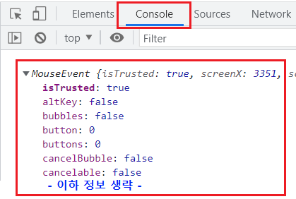
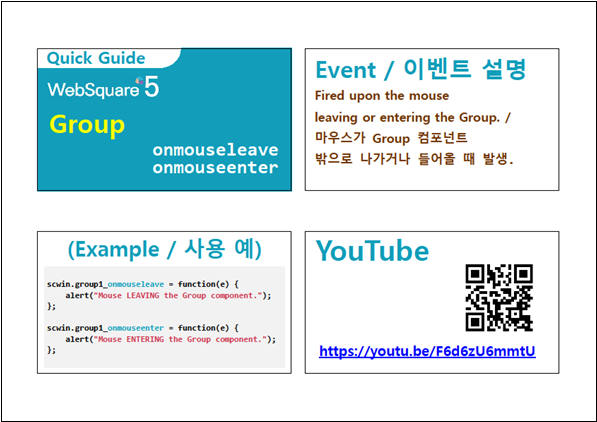

Group의 이벤트 onmouseleave 예제입니다. 이벤트 onmouseleave는 마우스 포인터가 컴포넌트의 영역 밖으로 나갔을 때 발생합니다.
이벤트 onmouseleave 발생 시 로그 출력하기
[브라우저(Chrome) 실행 예시 - Group 영역 안에 마우스 포인터가 위치]
[브라우저(Chrome) 실행 예시 - Group 영역 밖으로 마우스 포인터가 위치]
마우스 포인터가 밖으로 이동되면 영역 [로그 확인]에 이벤트 정보가 출력됩니다.
브라우저의 개발자 도구의 콘솔(console)탭을 통해 자세한 이벤트 정보를 확인 할 수 있습니다.
[브라우저(Chrome) 실행 예시 - 로그 확인]
[브라우저(Chrome) 실행 예시 - 개발자 도구의 콘솔]

예제 파일에서는 핸들러로 사용할 함수명을 scwin.grp_exam1_onmouseleave로 정의하였습니다.
그림 1.웹스퀘어5 SP5 스튜디오의 Property View(속성창)의 이벤트 탭 예시
[소스 코드 예시]
<!-- group 의 소스 본문 예시 --> <xf:group ev:onmouseleave="scwin.grp_exam1_onmouseleave" id="grp_exam1"> </xf:group>
STEP2. 핸들러 함수 scwin.grp_exam1_onmouseleave를 정의합니다.
[소스 코드 예시]
/** * Group "grp_exam1"의 onmouseleave 핸들러 * 마우스 포인터가 영역 밖으로 나갈 때 발생 */ scwin.grp_exam1_onmouseleave = function(e) { //로직 구성 //컴포넌트 ID 가져오기 //this.getOriginalID(); //이벤트 타입 //e.type; //이벤트 정보 출력 console.log(e); };
onmouseleave
[웹스퀘어5 SP5 개발 가이드] Group
링크 : https://docs1.inswave.com/sp5_user_guide/2059d4ce88b2fc16#7ffb7b894e8e326b
[웹스퀘어5 SP5 개발 가이드] Group 이벤트 onmouseleave & onmouseent
링크 : https://docs1.inswave.com/sp5_user_guide/2059d4ce88b2fc16#a8e88c4cdbc40159
Group 이벤트 onmouseleave & onmouseent
링크 : https://youtu.be/F6d6zU6mmtU
